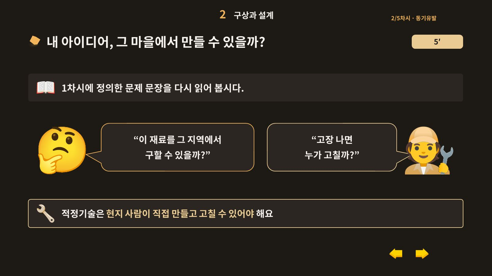
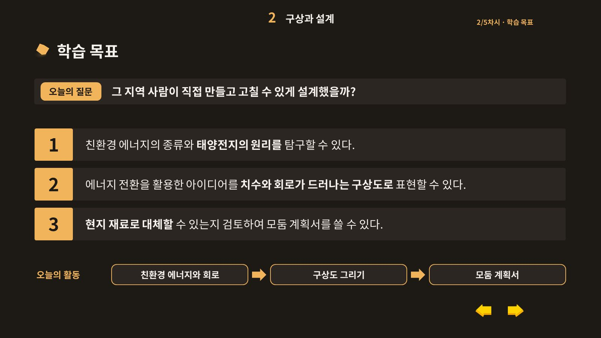
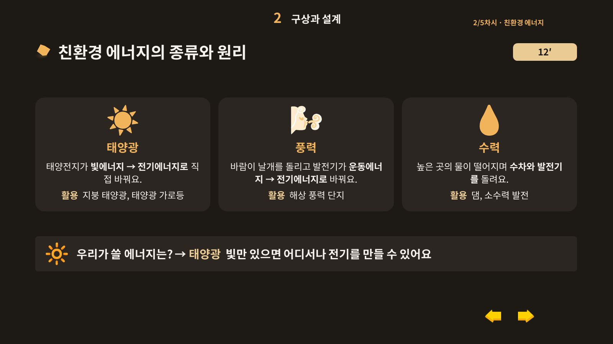
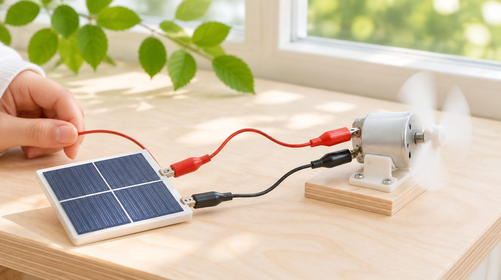
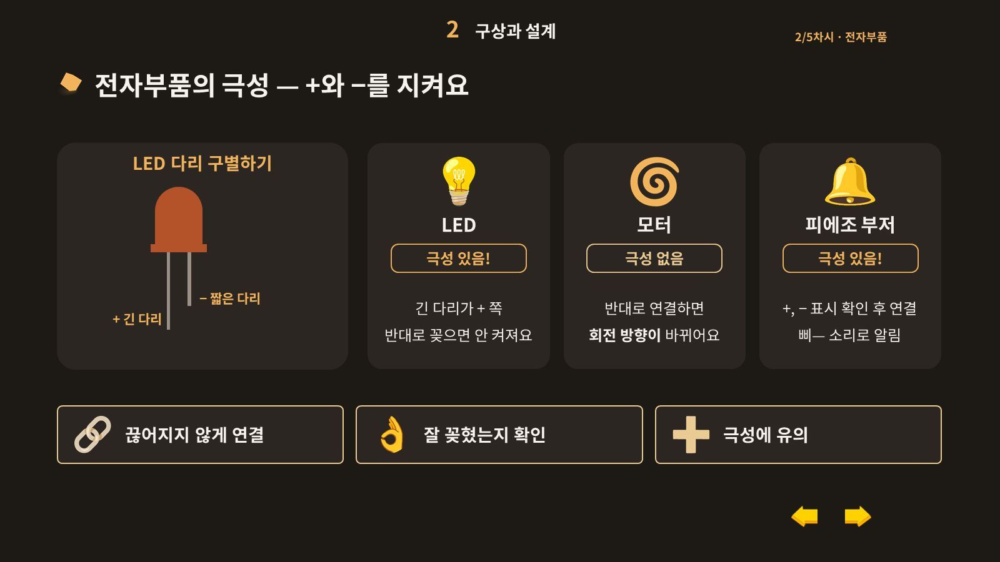
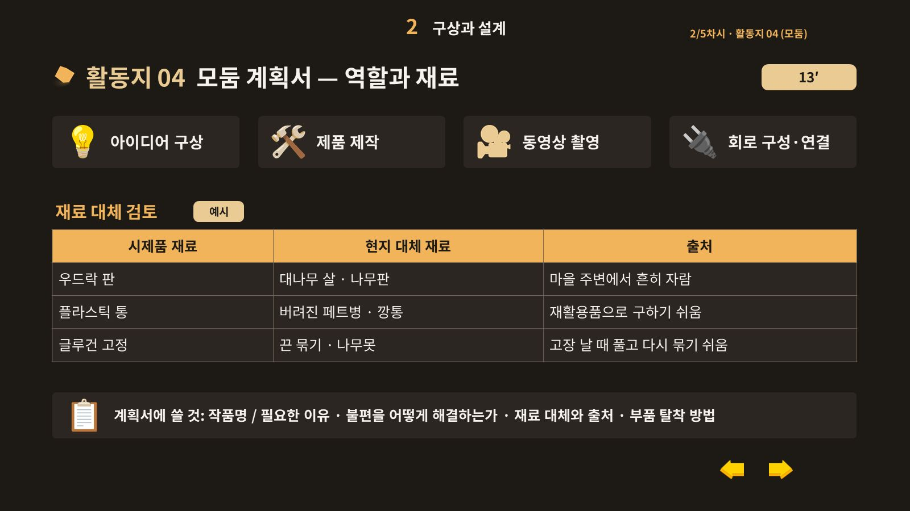
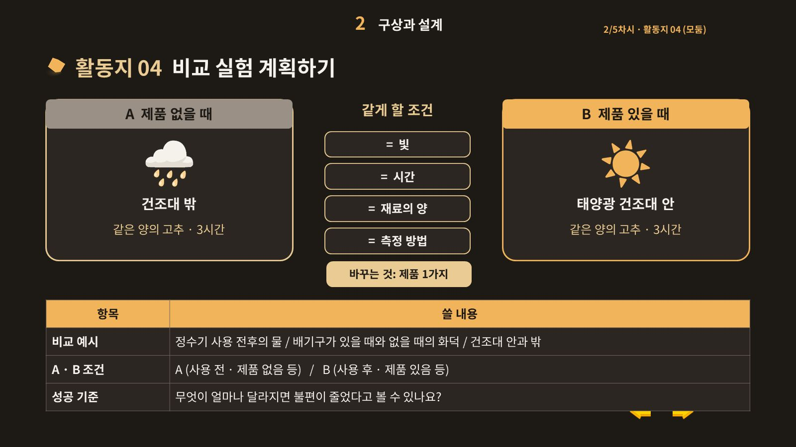
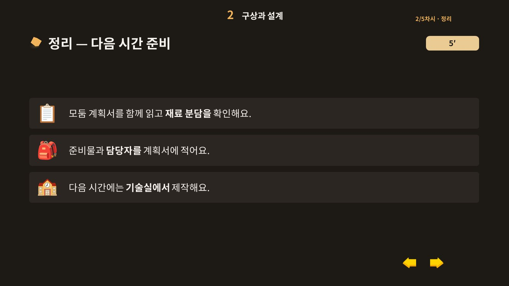

그 지역 사람이 직접 만들고 고칠 수 있게 설계했을까?
오늘의 목표태양전지가 빛에너지를 전기에너지로 바꾸는 원리를 알고, 치수와 회로가 드러나는 구상도를 그린 뒤 현지 재료로 바꿀 수 있는지 검토해 모둠 계획서를 써요.

수업 흐름
← → 키로 단계를 넘겨요. 교사 모드를 켜면 지도안의 발문과 유의점이 함께 보여요.
내 아이디어, 그 마을에서 만들 수 있을까?
1차시에 정의한 문제 문장을 다시 읽어 봅시다.
적정기술은 현지 사람이 직접 만들고 고칠 수 있어야 해요.

오늘의 질문
그 지역 사람이 직접 만들고 고칠 수 있게 설계했을까?
- 친환경 에너지의 종류와 태양전지의 원리를 탐구할 수 있다.
- 에너지 전환을 활용한 아이디어를 치수와 회로가 드러나는 구상도로 표현할 수 있다.
- 현지 재료로 대체할 수 있는지 검토하여 모둠 계획서를 쓸 수 있다.
오늘의 활동: 친환경 에너지와 회로 → 구상도 그리기 → 모둠 계획서

친환경 에너지의 종류와 원리
태양전지가 빛에너지 → 전기에너지로 직접 바꿔요.
활용: 지붕 태양광, 태양광 가로등
바람이 날개를 돌리고 발전기가 운동에너지 → 전기에너지로 바꿔요.
활용: 해상 풍력 단지
높은 곳 물의 위치에너지 → 떨어지며 운동에너지 → 발전기에서 전기에너지로 바꿔요.
활용: 댐, 소수력 발전
우리가 쓸 에너지는? → 태양광. 햇빛이 충분한 곳이면 연료 없이 전기를 만들 수 있어요. 빛이 약하면(흐린 날·실내) 전기도 적게 나와요.

빛 → 전기 → 빛·운동·소리
빛을 받으면 태양전지의 +극과 −극 사이에 전압이 생기고, 회로를 이으면 전기가 흘러요. 전자부품이 전기를 다시 빛·운동·소리로 바꾸는데, 이때 일부는 열로 빠져나가요.

전자부품의 극성 — +와 −를 지켜요
긴 다리가 +, 짧은 다리가 −. 반대로 꽂으면 안 켜져요.
반대로 연결하면 회전 방향만 바뀌어요.
발진 회로가 들어 있어 직류만 넣어도 삐— 울려요. +, − 표시를 확인해요. 수동형은 직류로는 ‘딸깍’ 소리만 나요.
| 부품 | 작동 조건(대략, 제품마다 다름) | 우리 태양전지와 비교 |
|---|---|---|
| LED | 빨강 약 1.8~2 V · 흰색·파랑 약 3 V, 수 mA~20 mA | 태양전지 뒷면의 정격(V·mA)을 적고, 모자라면 직렬(전압)·병렬(전류)로 연결 |
| 소형 모터 | 약 1.5~3 V, 수십~수백 mA | |
| 능동형 피에조 부저 | 정격 전압 확인(3 V 이하 작동형 권장), 수~수십 mA |

회로 오류 탐정 — 어느 회로가 작동할까?
4개 중 3개는 작동하지 않아요. 모둠은 미니 화이트보드에 ‘작동 안 하는 회로 번호와 이유’를 쓰고, 하나 둘 셋에 동시 공개! 카드를 누르면 정답이 보여요.
힌트: 전기는 +에서 나와 부품을 거쳐 −로 돌아와야 해요. 이유까지 맞히면 2점!
치수와 회로가 보이는 구상도
- 모양·구조·재료 — 어떤 재료로 어떤 모양인가요?
- 대략적인 치수(mm) — 가로·세로·높이를 숫자로
- 부품 탈착 방법 — 어떻게 떼고 붙이는지
- 회로와 +/− 표시 — 태양전지·부품·연결선
구상도는 각자 그려요. 다른 사람이 보고 똑같이 만들 수 있을 만큼 자세히!

모둠 계획서 — 역할과 재료
| 시제품 재료 | 현지 대체 재료 | 출처·이유(예시) |
|---|---|---|
| 우드락 판 | 대나무 살 · 나무판 | 마을 주변에서 흔히 자람 |
| 플라스틱 통 | 버려진 페트병 · 깡통 | 재활용품으로 구하기 쉬움 |
| 글루건 고정 | 끈 묶기 · 나무못 | 고장 날 때 풀고 다시 묶기 쉬움 |

무엇을 비교하면 불편이 줄었다고 말할 수 있을까?
건조대 밖 · 같은 양의 얇게 썬 사과 · 3시간
태양열 건조대 안(태양전지 팬으로 환기) · 같은 양의 얇게 썬 사과 · 3시간
같게 할 조건: 빛 · 시간 · 재료의 양 · 측정 방법 / 바꾸는 것: 제품 1가지
비교 예시: 정수기 사용 전후의 물 / 배기구가 있을 때와 없을 때의 화덕 / 건조대 안과 밖
태양열 건조대: 투명 덮개 안에서 태양열로 데워진 공기가 재료를 말리고, 태양전지 팬은 습한 공기를 내보내는 역할을 해요. 통고추는 마르는 데 며칠이 걸리니, 수업 시간 안에 차이를 보려면 얇게 썬 과일이나 젖은 천을 써요.

다음 시간 준비
모둠 계획서를 함께 읽고 재료 분담을 확인해요.
준비물과 담당자를 계획서에 적어요. 다음 시간에는 기술실에서 제작해요.

활동지
활동지 03 · 04 — 치수와 회로가 보이게
쓴 내용은 이 기기의 브라우저에만 저장돼요. 구상도와 회로 그림은 종이 활동지에 그려요.
활동지 03 · 구상도 (개인)
1아이디어와 구조
2탈착과 회로
3부품 작동 조건 비교
태양전지는 전기를 저장하지 않아요. 밤에 쓰는 설계에는 충전지와 충전 모듈(역류 방지 다이오드 포함)이 필요해요. 건전지·코인전지는 충전하지 않고, 리튬 전지는 쓰지 않으며, 전지에 LED를 달 때는 저항을 함께 연결해요.
활동지 04 · 모둠 계획서 (모둠)
1역할과 준비물
2작품과 이유
3재료 대체 검토
4비교 실험 계획
이 차시 슬라이드
나가기 질문
고장 나면 누가, 어떻게 고칠 수 있나요? 내 설계에서 떼어 바꿀 수 있는 부품과 그 방법을 적어요.